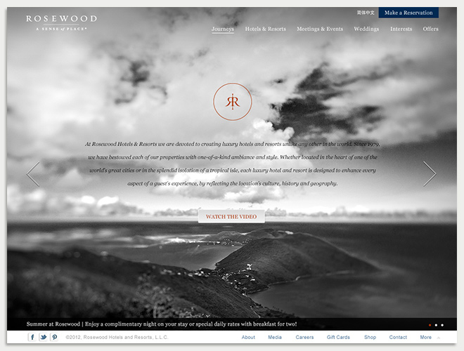
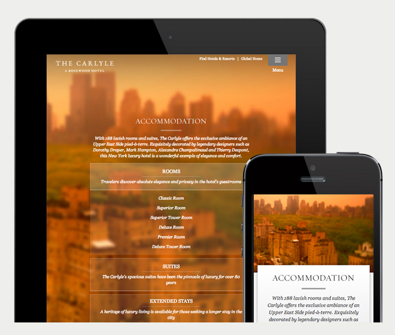
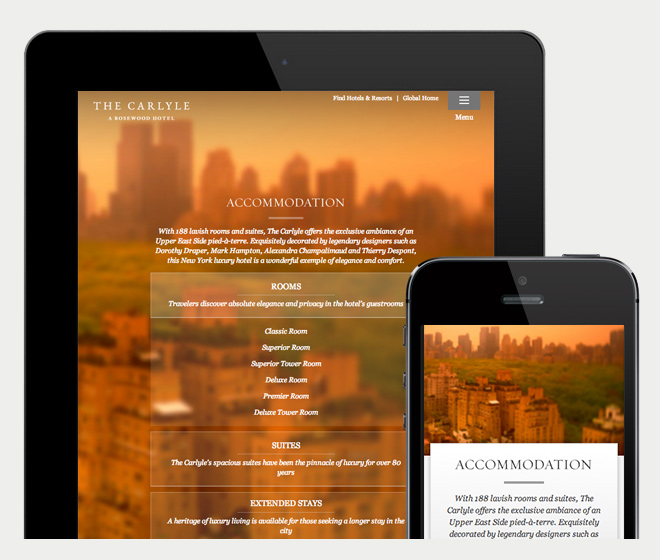

Edore.org UI/UX
Edore is a community to showcase and discover creative exercises for better learning.
-
View Project ↓
abc In today's tutorial we'll be creating a simple responsive accordion that, when opened, will slide to the top of the viewport and reveal the content by fading it in. The idea is to avoid that the user has to scroll the content area into place. We'll also add some nice CSS3 transitions for the arrow to appear and to rotate when we click on an item. The accordion will be flexible, meaning that it will have a liquid width adjusting to the screen size.
Rosewood Hotels & Resortsresponsive design
Rosewood Hotels & Resorts wanted to relaunch their brand and Isobar Hong Kong were asked to redesign their website. Working closely with the User Experience lead and Art director, I was responsible for the responsive design (mainly mobile and tablet version) of the site.

-
View Project ↓
Navigation is keyHorizontal menu and sub-menu on hover are used on the desktop site to give the user more possibilities to interact and gain from the site. In order to keep the mobile/tablet navigation as simple as possible, the popular swing-style navigation (hamburger menu icon) is used.Everything is flexible yet consistentA flexible grid will provide a consistent experience regardless of the device. In this case we established 3 breakpoints - 1024px, 768px and 320px. Images and content may be hidden or subtracted to create a better experience for smaller devices. We cut out the summaries of each sections not only to save space but allows users focus on the section titles.
 Simpler is betterImages of the selected hotels are used on the desktop site to create a more elegant and engaging experience. However saving space becomes more crucial when it comes to smaller screens. Accordion menu is used to allow space saving for a listing of hotels. We try our best to keep interaction in its simplest form and allow mobile users to focus on the content.
Simpler is betterImages of the selected hotels are used on the desktop site to create a more elegant and engaging experience. However saving space becomes more crucial when it comes to smaller screens. Accordion menu is used to allow space saving for a listing of hotels. We try our best to keep interaction in its simplest form and allow mobile users to focus on the content.
About
Hello. I was born and raised in Hong Kong. After graduating from Maryland Institute College of Art, I spent 2 years working in advertising world designing websites and campaigns. Now I design Edore.
© Ruth Tsang 2013 | rtsangdesign@gmail.com
© Ruth Tsang 2013 | rtsangdesign@gmail.com